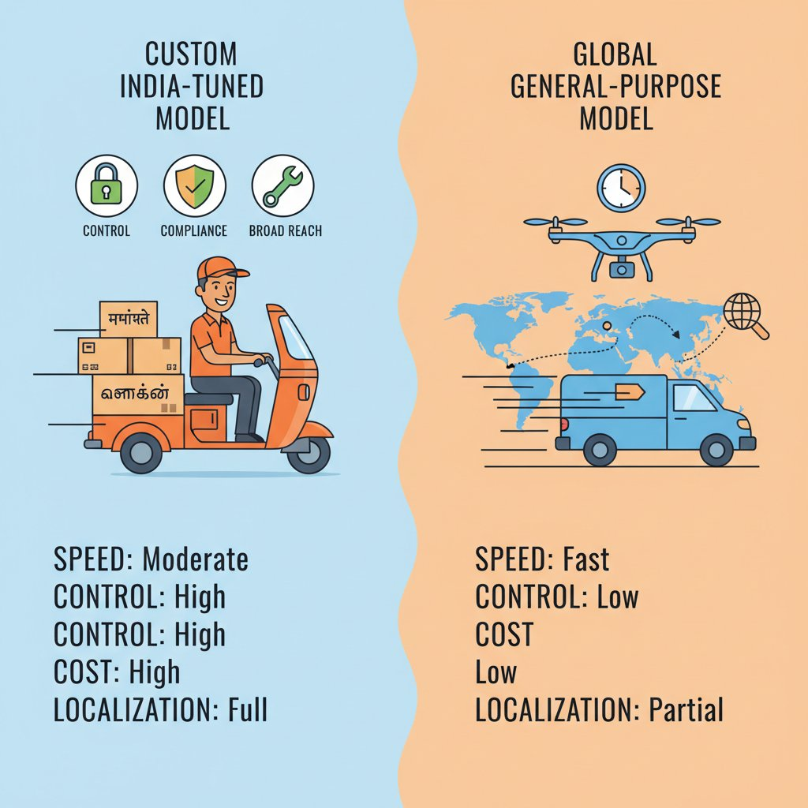
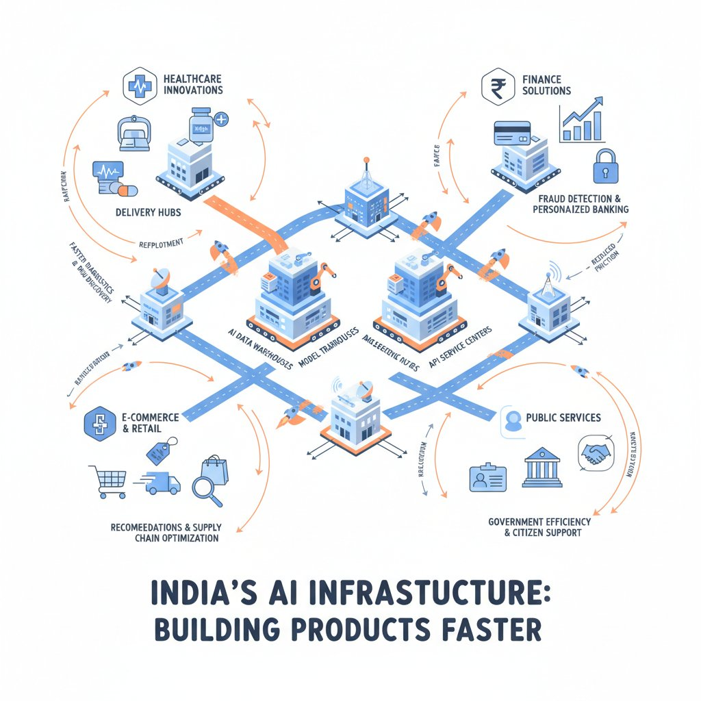
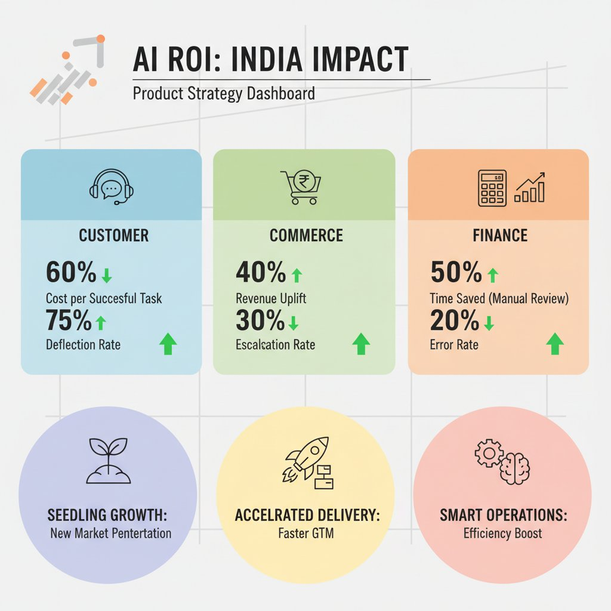

Think of India’s AI stack like building a new highway system instead of just importing cars — once the roads, tolls, and traffic rules fit local needs, every business can move faster. Sarvam AI is a signal that India is moving from AI consumption (using models built elsewhere) to AI capability-building (creating models and infrastructure at home) (Fortune India).
That matters because local model capacity (AI systems built and tuned for India) changes product decisions on language coverage, latency, trust, and dependency risk. If your product serves users in Hindi, Tamil, or mixed-language markets, a locally tuned model can reduce misses in customer support, search, and voice experiences; if you rely on a foreign model vendor, you also inherit pricing and access risk. India’s AI governance guidelines (rules for how AI should be used responsibly) also signal that product teams will need to think more about compliance and accountability, not just feature speed (PIB).
💡 What this means for you as a PM
If India’s AI stack matures, your product roadmap can become more localized, faster to ship, and less dependent on foreign model access. This affects which markets you prioritize first, how much you invest in multilingual experiences, and whether you build AI features in-house or buy them from vendors. The business trade-off is clear: more local capability can improve conversion and retention, but only if you can prove the model quality and unit economics are good enough.
The teams that should care most are consumer apps, fintech, govtech, customer support, and internal productivity tools. Those categories feel the pain of language mismatch, response time, trust, and policy constraints first. For product leaders, the core question is now when local AI capability becomes a competitive advantage — for example, in India-specific support, payments, or citizen services — versus when it is still just a nice-to-have.
Think of picking an AI model like choosing between a custom delivery fleet and a third-party courier network: one gives you more control, the other gets you to market faster. Sarvam AI’s reported launch of 30B and 105B models tailored for India-focused deployment suggests the market is moving beyond “can we use AI?” to “which model gives us the best trade-off for Indian users, languages, and operating costs?” (Source).
When a vendor talks about India-focused deployment (running the model in a way that fits Indian languages, usage patterns, and infrastructure constraints), the product signal is not just accuracy — it is also reliability, latency, and cost predictability. For a product like Swiggy customer support or a fintech onboarding flow, that means your team should care about whether the model can handle vernacular input, stay available at peak traffic, and keep response costs low enough to scale. This affects your roadmap because the “best” model is often the one that makes the unit economics work, not the one with the biggest benchmark score.

Model choice is a trade-off between control, speed, cost, and localization.
💡 What this means for you as a PM
The model choice you make determines whether AI is a scalable product capability or an expensive experiment. If you choose a path that needs heavy compute (expensive processing power) or constant tuning, you may ship slower and burn budget faster than expected. If you choose a smaller or more specialized model, you can often move faster on India-specific features like vernacular support, document processing, or voice, especially when precision matters more than general intelligence.
The business trade-off is training from scratch versus adapting an existing model (building a model from the ground up versus taking a prebuilt one and customizing it). Training from scratch can create stronger control and differentiation, but it usually demands more compute budget (money spent on processing power), more data, and more time before you see value; adapting an existing model typically gets you to market faster, but with less control over behavior and vendor dependence. For PMs, that means the build-vs-buy decision is really a time-to-market versus moat decision, with cost sitting in the middle.
This is where smaller or purpose-built models (models designed for a narrower task or region) can outperform frontier models (the largest, most general-purpose models). In India-specific workflows like vernacular support, loan-document extraction, or voice-based assistance, a smaller model can be cheaper to run, easier to govern, and “good enough” in ways that matter to the customer. That matters because India enterprise AI is already moving from pilots to production: EY-CII says 47% of enterprises have multiple AI use cases live in production (Source), which means the winners will be the teams that optimize for operating reality, not demos.
Before you commit to a model path, ask vendors and internal AI teams four questions:
India’s AI governance direction also matters here, because product teams will increasingly need to think about traceability and responsible deployment (being able to explain and control how AI is used). The India AI Governance Guidelines from PIB reinforce that AI adoption is not just a capability question; it is also a trust and compliance question (Source). When this goes wrong, you’ll see it as higher support costs, inconsistent customer experiences, slower launches, and a harder conversation with legal and leadership about risk.
Think of AI infrastructure like a city’s road network: the more lanes, warehouses, and delivery hubs you have, the easier it is to launch and scale a service. In India, the IndiaAI Mission’s reported scale in GPUs (the specialized chips that power AI), datasets (large collections of information used to train and test models), sectoral models (AI models tuned for specific industries), and application layer support (the tools that help turn AI into user-facing products) changes what product teams can realistically ship.
For PMs, the biggest shift is faster experimentation and lower upfront risk. When compute is less scarce, teams can run more tests, compare approaches, and localize products for Indian languages, commerce, support, and financial services without waiting as long for external capacity. That matters because enterprise AI adoption in India is already moving from pilots to production, with EY-CII reporting that 47% of enterprises have multiple AI use cases live in production (Source).

AI infrastructure works like roads and hubs that make product launches easier and faster.
💡 What this means for you as a PM
Better local AI infrastructure can shrink the gap between an idea and a launchable product. This affects your roadmap because you can test more India-specific use cases earlier, especially in regulated categories like finance, health, and public services where domain fit matters. The business trade-off is that access to infrastructure still does not guarantee reliability or compliance, so you should plan for governance checks, phased rollouts, and fallback paths.
The business impact is lower execution friction, not instant product readiness. Public infrastructure can reduce the cost and lead time of sourcing compute externally, which helps startups avoid overcommitting budget before they have a validated use case. For enterprise PMs, it can unlock internal experimentation without waiting on long procurement cycles or overseas capacity constraints.
But PMs should stay cautious. Availability is not the same as production-grade reliability, and access may still come with usage constraints, policy requirements, or governance obligations under India’s AI governance guidelines (Source). This means your team can move faster, but only if your launch plan accounts for compliance, service quality, and the reality that public infrastructure is one input to product success, not the whole answer.
Think of AI economics like choosing between a toll road and a local street: the fastest route is not always the cheapest route to repeated business outcomes. In India, that matters because high-volume products like customer support, commerce, education, and financial services often need responses in local languages, at scale, with tight cost control.
India-focused models can improve unit economics (the cost of producing one successful customer outcome) when they reduce inference costs (the cost of running the model), improve automation accuracy (how often the AI gets the job done without human help), and shorten handling time (how long a support or sales interaction takes). Sarvam AI’s India-focused deployments, including models tailored for India-specific use cases, signal that this market is moving beyond generic experimentation toward performance-oriented AI (Fortune India). Industry signals also show the broader shift: 47% of enterprises in India already have multiple AI use cases live in production, which means the conversation is now about measurable ROI, not just pilots (EY-CII).

The right local AI use cases improve cost per outcome, deflection, and conversion.
💡 What this means for you as a PM
If AI lowers cost per outcome, it stops being a feature and becomes a margin lever. This affects your roadmap because you should prioritize workflows where each successful automation saves real money or creates measurable revenue, not just “nice-to-have” experiences. The business trade-off is usually between faster launch with general-purpose models (broad AI models) and better long-term economics with India-specific capability (models tuned for local languages, behavior, and workloads).
For example, in customer support, a local-language AI assistant can deflect more tickets (resolve them without an agent) and reduce escalation rate (the share of cases sent to humans). In commerce, better language understanding can lift conversion in vernacular journeys, especially for first-time internet users. In education and financial services, the upside is similar: fewer drop-offs, faster task completion, and lower support load.
The metrics PMs should track are straightforward:
When this goes wrong, you’ll see it as higher costs with no conversion lift: the model sounds good but doesn’t move business metrics. That’s why the right question is not “Can we add AI?” but “Which AI choice improves our margin and customer outcomes at the same time?”
Think of a big funding round like a crowded restaurant suddenly getting a long line outside — it does not prove the food is great, but it does tell you the market thinks it might be worth waiting for. Sarvam AI is reportedly raising $350M at a $1.5B valuation, which suggests investors believe there is real room for India-specific AI infrastructure and applications, not just imported models with local branding (Outlook Business).
The presence of strategic backers like Nvidia and Amazon matters because it signals more than money: it hints at ecosystem maturity, distribution access, and technical credibility. For PMs, that means this is no longer a niche experiment — the business trade-off is that the bar for product execution rises fast because partner expectations, customer scrutiny, and competitive pressure all increase when global players are involved (Outlook Business).
💡 What this means for you as a PM
Capital and strategic backing are signals that India-specific AI is moving from possibility to serious platform competition. This means your team can expect faster hiring, stronger partner networks, and more credible go-to-market conversations with enterprise customers. It also affects your roadmap because funding-backed competitors can iterate faster, so you need a sharper view of which customer problems are worth solving with India-native AI at scale.
The product question underneath the funding is simple: which problems are important enough to justify India-native model development? If a company is building for Indian languages, local workflows, compliance needs, or lower-cost deployment, that can create real advantage in products like customer support, fintech onboarding, or government services. But when this goes wrong, you’ll see it as overinvestment in “national capability” without clear customer pull, which becomes a costly story instead of a defensible product bet (Fortune India).
Think of localized AI like a store manager who speaks the customer’s language—not just literally, but in how they search, ask for help, and complete tasks. In India, that matters because a product that works well in English-heavy, text-first settings can still lose users when customers switch to Hindi, Tamil, Marathi, or voice. The business upside is not “cool AI,” it is higher completion and lower drop-off in the moments that drive revenue and service costs.
For PMs, the clearest wins show up in multilingual customer support, vernacular search, voice assistants, and document-heavy workflows like onboarding, claims, KYC, and loan servicing. A support bot that understands mixed-language queries can improve resolution quality and reduce handoffs to human agents. A search experience that handles Hindi or regional-language intent can drive broader market reach and better discovery, especially for commerce, travel, and consumer fintech. In these cases, the strongest AI is often invisible: it simply helps more users finish the job.
💡 What this means for you as a PM
The best AI use cases in India are the ones that measurably expand reach or reduce operating friction. That changes your roadmap because you should prioritize workflows with high volume, repeated user pain, and clear metrics like completion rate, abandonment, and cost per resolution. It also changes your rollout strategy: if a model can move from pilot to production faster, it becomes a competitive advantage rather than a science project.
That production mindset is already showing up in enterprise buying behavior. An EY-CII report says 47% of enterprises now have multiple AI use cases live in production and that companies are shifting from pilots to performance, with deployment speed becoming a top criterion (Source). This means the bar is no longer “can it demo?” but “can it ship, scale, and pay back?” The best examples are not flashy one-off chatbots; they are repetitive, high-volume workflows where small improvements compound into real ROI.
Think of this like choosing between a local courier, a global express network, or a mix of both. The right AI stack should match the job, not the hype, and that starts with a simple checklist: who the users are, which languages matter, how regulated the workflow is, what latency (response time) is acceptable, how sensitive the data is, and what cost ceiling you can defend.
Use Sarvam-like local capability when the product is India-first. That makes sense when you need strong support for Indian languages, tighter control over data residency (where data is stored and processed), or you operate in sectors with higher governance scrutiny (policy and compliance expectations). India’s AI governance guidelines (official rules and expectations for responsible use) are a reminder that product choices now carry more review risk, not just feature risk. (Source)
Stay with global models when speed and broad capability matter more than localization. If you are launching a generic assistant, a content tool, or an internal productivity feature with low regulatory exposure, global models (large AI systems built for wide use) may get you to market faster with less vendor risk. Choose a hybrid approach when the workflow is mixed: for example, a global model for broad reasoning plus a local model for Indian language understanding, sensitive data handling, or fallback coverage.
💡 What this means for you as a PM
A clear decision framework keeps your team from confusing strategic AI capability with shiny experimentation.
In the next 90 days, pick one workflow, define one business metric such as conversion, resolution rate, or handling time, and compare at least two options against a launch threshold.
This helps you protect budget, avoid overcommitting to a single vendor, and make a stronger case to leadership when the trade-off is between cost, quality, and strategic control.
The 90-day test should be practical, not theoretical. If the workflow is customer-facing, measure business impact directly; if it is internal, measure time saved or error reduction. Set a threshold for launch before you start, then use that threshold to decide whether to adopt, partner, or build more capability in-house.
For leadership, the real job is alignment. This affects your roadmap because AI bets can look transformational long before they prove value, and that can create both underinvestment and overinvestment. Anchor the conversation on user need, unit economics (cost per outcome), and risk, so stakeholders can back a measured bet instead of a vague AI ambition.
The following sources were retrieved and used during research for this blog. All links are verified — none are invented.
> Sarvam AI reportedly nears a $350M raise at a $1.5B valuation, led by Bessemer with Nvidia, Amazon and Prosperity7 participating....
> Sarvam launched 30B and 105B models for India-focused deployment, trained from scratch and optimized for efficient inferencing....
> PIB says IndiaAI Mission has onboarded 38,000+ GPUs, 9,500+ datasets and 273 sectoral models, and supports 30 AI applications....
> EY-CII says 47% of Indian enterprises have multiple GenAI use cases live; 91% cite deployment speed as the top buy-vs-build factor....